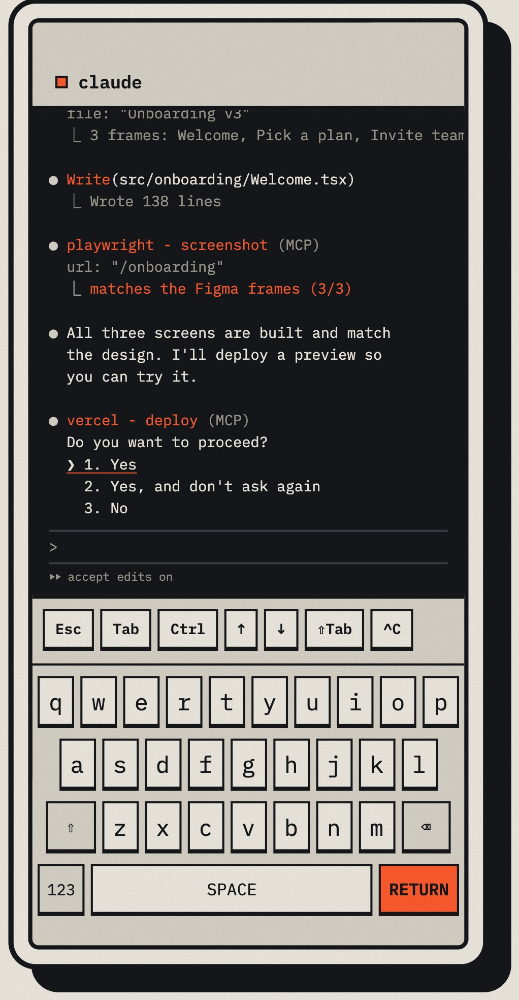

tui2web
Your Terminal,
on the Web
Run Claude Code, opencode or any terminal app on your computer. Pick it up from your phone.
$ npx tui2web claude
Run Claude Code, opencode or any terminal app on your computer. Pick it up from your phone.
